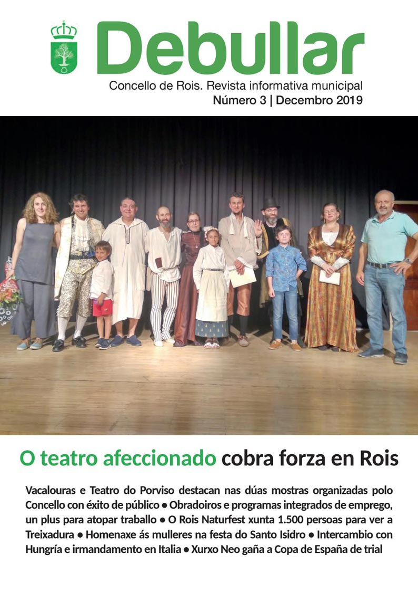

Dodro
Padrón
Rois
Camiños
Ruta da Estrela
Formacións
Portada
Historia
Lendas
Historia
Debullar
Land Art en Seira
Festas
Mulleres
Natureza
Árbores senlleiras
Patrimonio
Capelas
Castros
Cruceiros
Hórreos
Igrexas
Muíños
Pazos e casas
Persoeiros
Rosa del Río Otero
Jesús Blanco Villar
Pere Tobaruela
Camilo Seira
Manuel Soto
Miguel Ángel Vigo
Manuel Rodríguez
Martín Bouzas
Xurxo Neo
Roteiros
Do Castro Lupario
Das Penicias
Servizos
Cultura
Deporte
Educación
Social
Historia
Portadas Revista Debullar
Portadas Revista Debullar

Historia
Portadas Revistas Debullar
Debullar 2017
Debullar 2018
Debullar 2019
Debullar 2020